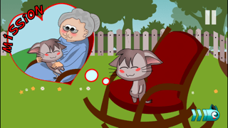
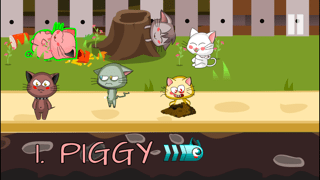
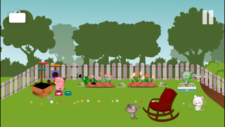

Aventure · Puzzle Cats in the Box
Cats in the Box – Aventure point-and-click
6 aventures différentes, chacune avec son propre chaton. Piggy, Rocky, Sleepy, Milly, Cranky et Crazzy vous emmènent dans leurs univers remplis d’objets à trouver, d’énigmes à résoudre et de petites surprises.
Le gameplay est 100 % tactile : touchez pour ramasser, utiliser ou combiner des objets. Simple, intuitif et parfait pour les petits écrans.
Un jeu sans violence, idéal pour se détendre avec des casse-tête mignons mais pas toujours faciles !
6 chatons, 6 histoires
Chaque chaton a son caractère, ses énigmes et son aventure dédiée.

Toucher pour jouer
Inventaire simple, interactions tactiles, objets combinables.

Besoin d’aide ?
Des vidéos pas-à-pas sont disponibles si vous êtes bloqué.
